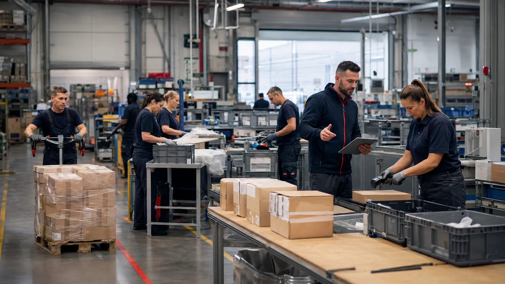

Desidero affidare un processo
Descriva il processo, il volume, la sede e la scadenza. Proporremo ambito, KPI, modello di corrispettivo e un piano di avvio realistico.
Richieda informazioni sull'outsourcing →Equss Outsourcing rileva processi in produzione, logistica, trasporti, hospitality, pulizie ed edilizia, in Polonia e in 36 Paesi europei. Il corrispettivo è legato al risultato concordato.

Equss Outsourcing in una frase: Equss Outsourcing è una società di outsourcing di Varsavia (EQUSS Prosta Spółka Akcyjna, KRS 0001275598) che rileva processi operativi e organizza team per produzione, logistica, trasporti (autisti patente B, C, CE), hospitality, ristorazione, pulizie, agricoltura ed edilizia in Polonia e in altri 36 Paesi europei.
Non siamo un'agenzia per il lavoro. Rileviamo processi e rispondiamo del loro risultato, in Polonia e all'estero.
Descriva il processo, il volume, la sede e la scadenza. Proporremo ambito, KPI, modello di corrispettivo e un piano di avvio realistico.
Richieda informazioni sull'outsourcing →
Progetti in 37 Paesi europei, dalla Germania e dalla Lituania alla Spagna, alla Scandinavia e ai Balcani. Ogni Paese viene verificato separatamente.
Vedi i Paesi →
Costruiamo team con personale reperito tramite partner in Asia, Africa, nelle due Americhe e nei Balcani, previa verifica del percorso giuridico.
Come funziona →
Ci segnali il contatto di un datore di lavoro con un reale fabbisogno. Le condizioni di collaborazione vengono definite individualmente.
Segnali un datore di lavoro →Nell'outsourcing è l'appaltatore a organizzare il lavoro e a rispondere del risultato. Il cliente definisce i requisiti e riceve l'esito.
Rilevamento di fasi distinte della produzione: montaggio, imballaggio, controllo visivo, conduzione di linee.
↗Picking, imballaggio delle spedizioni, ricezione merci, carico e inventari secondo il modello a risultato.
↗Housekeeping, aiuto cucina, lavaggio stoviglie e servizi di retrobottega, anche stagionali.
↗Pulizia di immobili uffici, commerciali, logistici e industriali.
↗Team di saldatori, elettricisti, montatori e operatori di macchinari per ambiti di lavoro distinti.
↗Team di autisti di furgoni (B), camion (C) e autotreni (CE) con codice 95 (CQC) e carta tachigrafica del conducente.
↗Personale da Asia, Africa, Americhe e Balcani, tramite una rete di partner, previa verifica del percorso giuridico.
↗Non sa quale modello faccia al caso Suo?
Descriva il processoOgni progetto viene qualificato separatamente. Non dichiariamo volumi né tempi prima di aver verificato il processo.

Picking, imballaggio delle spedizioni, ricezione merci, carico e inventari.
Scopra il modello di outsourcing →
Montaggio, imballaggio, conduzione di linee e controllo visivo.
Scopra il modello di outsourcing →
Consegne, distribuzione regionale e trasporto internazionale. Codice 95 (CQC) e carta tachigrafica del conducente verificati prima dell'avvio.
Scopra il modello di outsourcing →
Housekeeping, lavaggio stoviglie, aiuto cucina e servizio stagionale.
Scopra il modello di outsourcing →
Saldatori, elettricisti, montatori e operatori di macchinari.
Scopra il modello di outsourcing →
Immobili uffici, commerciali, logistici e industriali.
Scopra il modello di outsourcing →L'elenco indica aree di attività, non ordini già acquisiti. La fattibilità viene confermata per ogni singola offerta.

Confermiamo ambito, calendario e criteri di accettazione prima di avviare il team.
Attività, volume, turni, sede e criteri di accettazione.
Ambito di responsabilità, KPI, modello di corrispettivo e calendario.
Selezione del personale, a livello locale o tramite partner internazionali.
Avvio controllato su una parte concordata del processo.
Risultati, qualità, escalation e decisione sulla scala.
Cerchiamo datori di lavoro diretti con un reale fabbisogno: stabilimenti, magazzini, aziende di trasporto, hotel, ristoranti, aziende agricole e imprese edili.
Le FAQ precedono il modulo, così da poter valutare modello e ambito prima ancora del contatto.
Equss Outsourcing è una società di outsourcing. Rileviamo processi operativi concordati (ad es. picking, imballaggio, montaggio, trasporti, housekeeping, pulizia di immobili, lavori ausiliari in cantiere) e rispondiamo della loro organizzazione e del risultato. Non siamo un'agenzia per il lavoro e non inviamo lavoratori a operare sotto la direzione del cliente.
Nell'outsourcing l'appaltatore organizza il lavoro del proprio team, lo supervisiona e risponde del risultato concordato, mentre il cliente riceve l'esito secondo criteri prestabiliti. Nella somministrazione l'agenzia invia i lavoratori all'utilizzatore, che ne dirige direttamente l'attività. Equss opera secondo il modello dell'outsourcing.
Accogliamo richieste da aziende della Polonia e di altri 36 Paesi europei, tra cui Germania, Lituania, Repubblica Ceca, Paesi Bassi, Austria, Spagna e Paesi baltici. La fattibilità viene confermata separatamente per ogni progetto, dopo la verifica della mansione, della normativa e del percorso di impiego.
Reperiamo il personale tramite una rete di partner, tra l'altro in India, Nepal, Bangladesh, Pakistan, Sri Lanka, Filippine, Vietnam, Uzbekistan, Tagikistan e Azerbaigian, nonché in altri Paesi dell'Asia, dell'Africa, delle Americhe e dei Balcani. Il Paese di provenienza viene stabilito caso per caso: dipende dalla cittadinanza, dalla mansione, dal Paese di lavoro e dalla normativa vigente.
Non esiste un numero di giorni valido per tutti i Paesi. I tempi dipendono dal Paese di lavoro, dalla cittadinanza, dalla disponibilità dei documenti, dai permessi e dalle accreditazioni richiesti e dalle decisioni delle autorità. Forniamo una stima solo dopo aver analizzato il singolo progetto e non la consideriamo una garanzia.
Il corrispettivo segue l'ambito e le modalità di accettazione: per unità di risultato (pezzo, pallet, camera, metro), per volume, per periodo o in forma mista. Le condizioni economiche e il contratto vengono definiti individualmente.
Indichi il minimo necessario per un'analisi preliminare. Le invieremo una raccomandazione su ambito e modello di corrispettivo.